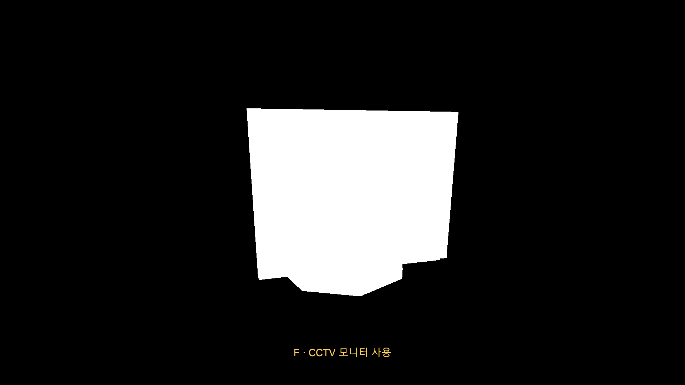
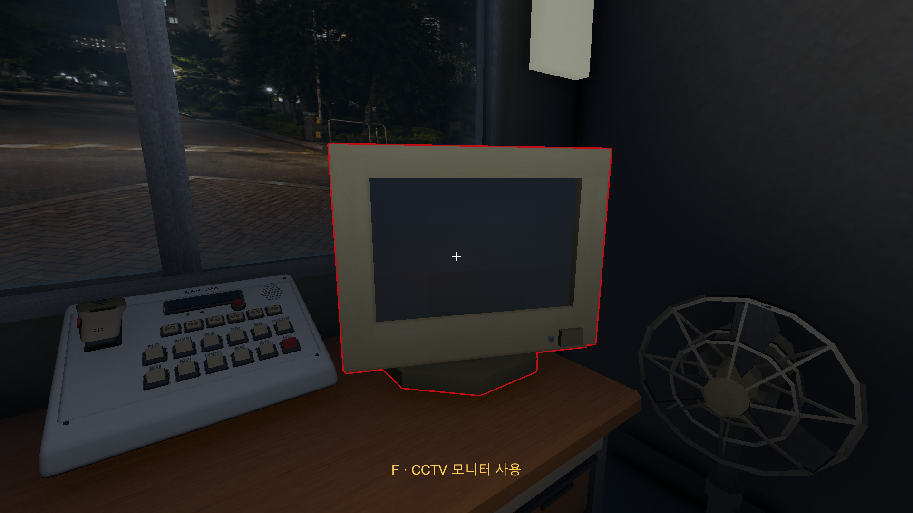
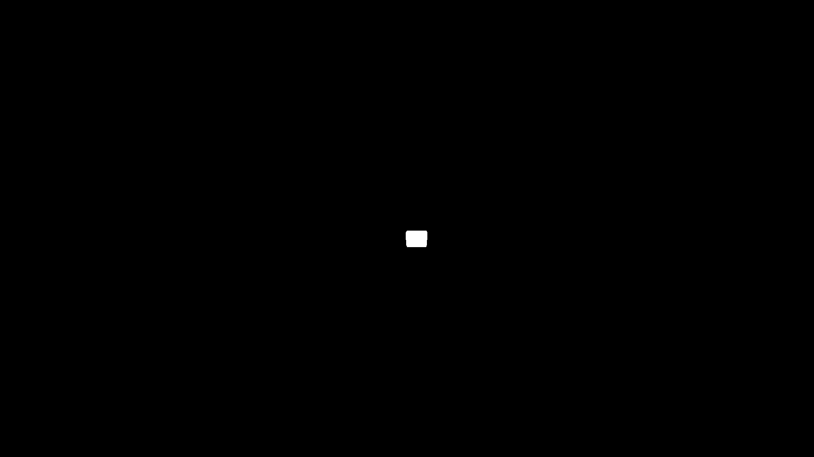
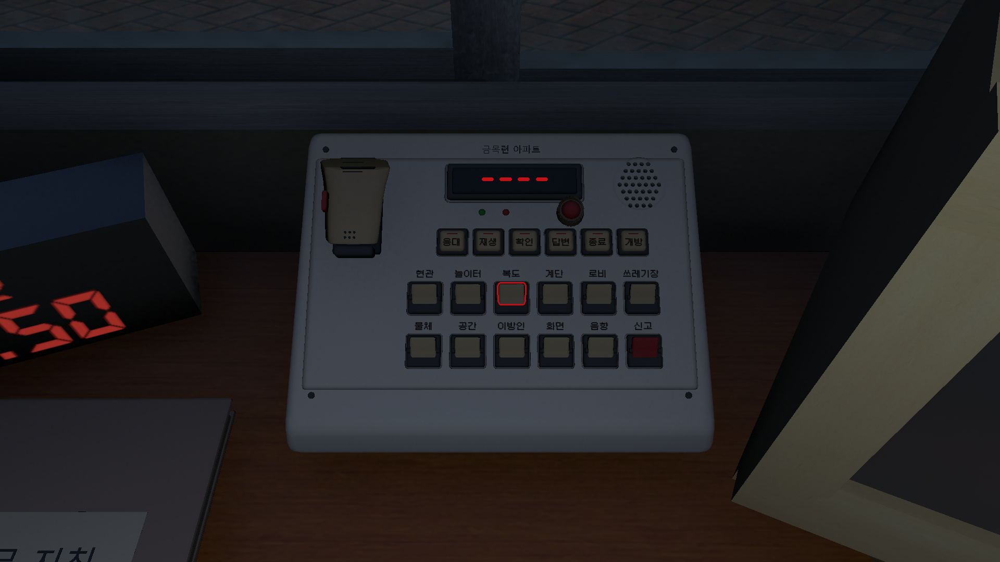
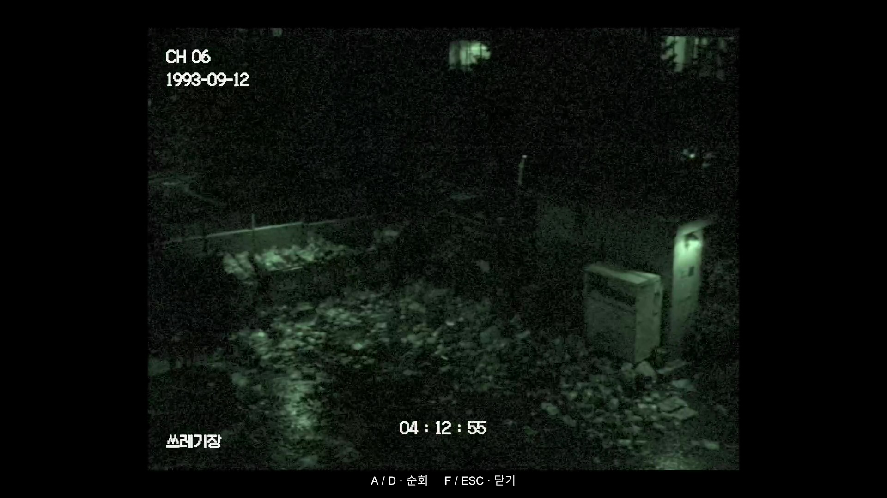
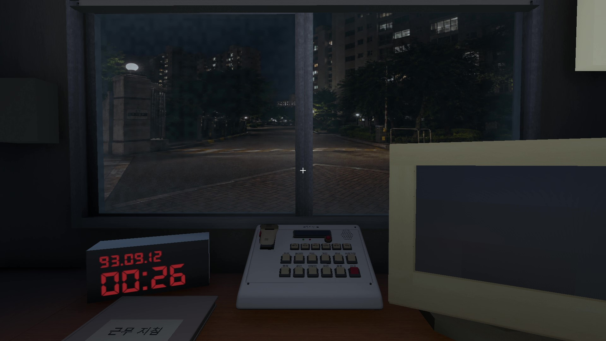
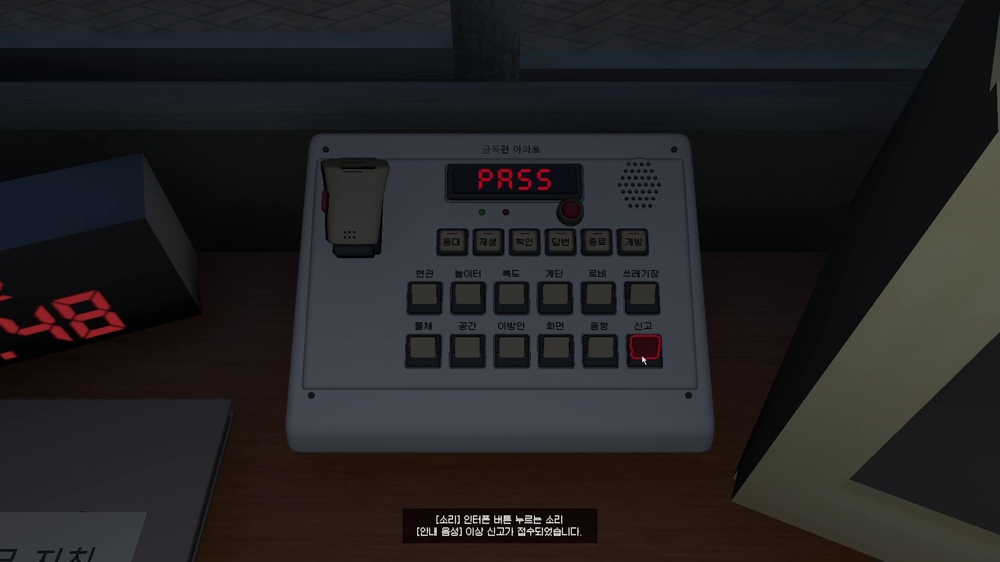

관찰·판정·신고와 복수의 실패 조건이 맞물리는 완결된 게임 규칙.
01 / Solo Game · Complete Playable Demo
ACTION
REQUIRED
1993년 아파트 경비실을 배경으로 한 CCTV 감시 호러 게임.
Built with AInvil + Unity MCP · Tooling + Workflow Application
제가 시스템과 수용 기준을 설계하고, AI Agent를 구현·실행·검증의 반복자로 사용했다.
처음부터 끝까지 플레이 가능한 데모와 Windows x64·WebGL 빌드 기록.
02 / GAME
관찰하고, 분류하고, 신고한다.
1993년 아파트 경비실에서 CCTV와 인터컴을 확인하며 이상현상을 분류한다. 여러 사건의 누적과 특정 위험 행동은 서로 다른 실패 조건으로 작동한다.
Gameplay Loop
ROOM
CCTV
OBSERVE
REPORT ↺
INTERCOM → RULE / EVENT00:00 → 06:006 CAMERAS
03 / DEVELOPMENT WORKFLOW
제가 설계하고, Agent가 반복 실행했다.
게임 규칙, 상태 모델, 아키텍처와 완료 기준은 제가 결정했다. AInvil은 그 컨텍스트를 Host AI에 전달하고, Unity MCP를 통한 구현·실행·진단·수정 반복을 실제 제작 흐름으로 연결했다.
Developer
Game Rules
Game Rules
Architecture
Acceptance
Acceptance
Agent
Implementation
Implementation
Unity MCP
Execution
Execution
Developer
Final Judgment
Final Judgment
04 / CASE 01
Multiple anomalies.
화면 상태가 아니라 사건 identity를 셌다.
DESIGN → IMPLEMENTATION → BOUNDARY TEST
여러 CAM의 사건이 신고 전까지 동시에 남도록 single-active 구조를 고유 instance 기반으로 바꾸고, 재관찰은 사건 수가 아니라 observation state만 바꾸도록 정했다.
Active Instances
CAM01 · Object#A17
CAM03 · Sound#A18
CAM06 · Stranger#A19
Active3
Boundaries
Active ≥ 3 · 299sALIVE
Active ≥ 3 · 300sGAME OVER
3 → 2TIMER RESET
DEVELOPER
사건 identity
실패 조건
경계값
CODEX (HOST AI)
구조 변경
timer
debug hook
VALIDATION
경계값 재현
runtime evidence
05 / CASE 02
UI lifetime ≠ game state lifetime.
CCTV UI가 닫히는 것과 이상현상 instance가 끝나는 것은 같은 사건이 아니다. Screen 진행도와 Sound playhead의 owner를 UI GameObject에서 anomaly instance로 옮겼다.
Screen
Before Seen0x
Current CAM1x
Other View0.25x
ReturnCONTINUE
Sound
10.29477s
CAM Leave / Pause
CAM Return / 10.29477s →
06 / CASE 03
Compile pass ≠ Visual pass.
컴파일 성공은 화면 성공이 아니다. Selection에서 Mask Pass, Composite로 이어지는 경로를 실제 production mask와 최종 화면 양쪽에서 분리 검증했다.
Latest RenderGraph State
- C# compile0 ERRORS
- Mask / debug / composite shaders0 MESSAGES
- Console errors0
- Tested branchesCASE C · PASS
- Full AC-PROP-005PARTIAL / PENDING
Diagnostic Progression
Selection
Mask Pass
Composite
Visual Failure
MaskOnly + Final Evidence
MaskOnly가 production R8 TextureHandle을 UseTexture(mask)로 읽고, raw white/black과 Final outline을 각각 확인했다.
View RenderGraph Evidence
Verified Branches
MaskOnly · Monitorrenderer 1 · draws 4 · white 255 / black 0 · PASS
MaskOnly · Intercom Channel03renderers 2 · draws 2 · Channel03 only · PASS
Selection Cleardraws 0 · black 0 · PASS
Final · Monitorred outline · full silhouette · no interior tint · PASS
Final · Intercom Channel03Channel03 only outline · no whole-object bleed · PASS
초기 MaskOnly 흰색이 post-processing 때문에 약 RGB(197,208,218)로 측정되어 진단 pass만 AfterRenderingPostProcessing으로 이동했다. production Final 경로는 바꾸지 않았고, 재실행에서 정확한 white 255 / black 0을 확인했다.





남은 전체 수용 범위: occlusion/depth, distance/scale ±1 px, hard-edge/submesh continuity, window/empty traversal. 따라서 검증한 분기는 PASS지만 AC-PROP-005 전체 자동 검증은 확장 중이다.
07 / SMALL CASES
복원값과 evidence의 경계를 시험했다.
EXACT RESTORE
0.5 → Pause(0) → 0.5 ✓
0.5 → Pause(0) → 1.0 ✕
비기본 값으로 이전 Time.timeScale 복원을 검증했다.
OLD EVIDENCE ≠ NEW EVIDENCE
Runtime TTS → Pre-baked WAV
User Confirmed ✓ → architecture changed → 90 files
완성된 데모의 음성 구조를 pre-baked WAV로 교체한 뒤, 예전 TTS 검증을 새 구현의 증거로 재사용하지 않았다. 게임 기능과 별개로 변경 경로의 자동 증거를 다시 수집하는 중이다.
08 / RESULT
19 Days. A Complete Playable Demo.
19일의 솔로 개발로 CCTV 관찰, 인터컴 판정, 다중 이상현상, 신고와 실패 조건뿐 아니라 시작부터 종료까지 이어지는 데모의 전체 플레이 흐름을 완성했다. 단순한 코어 플레이 프로토타입이 아니며, 완성본까지 남은 작업은 밸런싱과 이상현상 밀도, 플레이 흐름 조절이다.
처음부터 끝까지 플레이 가능한 전체 데모.
밸런스·이상현상 밀도·플레이 흐름 조절.
변경된 오디오 경로와 시각적 edge case의 추가 자동 검증.
19Days · Solo Development
Unity 6C# · URP · Input System
2Windows x64 · WebGL build records



DEMO TRAILER
완성된 데모의 분위기와 플레이 흐름.
로컬 캡처는 개별 시스템의 증거를, 트레일러는 하나의 게임으로 연결된 최종 경험을 보여준다.
Watch on YouTube ↗09 / TECHNICAL EVIDENCE
IDs, files, validation state.
아래의 Pending은 데모 완성 여부가 아니라 자동 검증 범위와 변경 이후 증거 갱신 상태를 뜻한다.
View Technical Evidence
| Case | Design | Code | Validation |
|---|---|---|---|
| Multiple anomalies | REQ-OBS-003/007/008/015 | AnomalySchedulerCctvControllerGuardRoomDebugHooks | AC-OBS-010~016일부 자동 검증 확장 중 |
| Screen / Sound | REQ-OBS-003/007/008 | AnomalyScheduler.ScreenElapsedSecondsSoundAnomalyController | AC-OBS-017/018Runtime Tested |
| Selection mask | REQ-PROP-005TASK-PROP-004 | SelectionSilhouetteRendererFeatureSelectionHighlightRegistry | VAL-PROP-005-MASK-SIMPLE / CLEAR / INTERCOMCase C tested branches PASS Full edge-case automation expanding |
| Pause | REQ-UI-PAUSE-001~005 | PauseMenuController | VAL-UI-PAUSE-001~005Runtime Tested |
| Intercom | REQ-INTERCOM-001~015 | IntercomControllerconversation JSON · 90 WAV | Core User Confirmed 변경된 audio path evidence refresh |
Action Required는 AInvil plugin/runtime과 Unity MCP를 실제 제작에 사용했다. 구체적인 버전·호출 횟수·전체 코드 중 생성 비율은 확인되지 않은 수치로 만들지 않는다.
← All projects